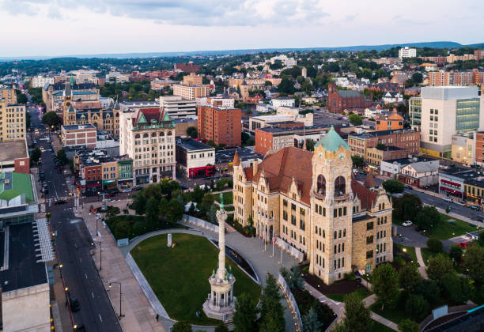

Real Estate Investing in Scranton
The Pennsylvania real estate market has gone through a lot of changes lately. One of the most intriguing locations for investors is the Scranton region. Though this area has often gone under the radar, it has developed a lot of promising features. Keep reading to discover everything you need to know about investing in this area.
An Overview of Scranton Real Estate
The average home value for a house in this town is $177,500. The value of homes has been consistently on the rise since the 2020s. Currently, home prices are increasing by around 9% per year. Home depreciation in this city is 2% lower than national averages.
The town's real estate is primarily focused on residential properties. While there are typically around 50 commercial properties listed on the market, the inventory for residential homes often sits at around 150 properties. The city contains a lot of single-family homes, though some multi-family residences are available as well.
The most in-demand neighborhoods in the area include:
- Hill Section
- Green Ridge
- Tripp's Park
- Pinebrook
- Hyde Park
- Bull's Head
- Downtown
Data Predicts a Seller's Market
Of course, one of the first things most investors want to know is, "Is Scranton in a buyer's market or a seller's market?" Data from Zillow and other housing aggregators paints a promising picture for sellers. The city is currently in a strong seller's market while other parts of the state are swinging back towards a neutral market.
The number of interested buyers is far higher than the number of interested sellers. This type of market is a great thing for investors. Homes sell quickly, buyers are willing to waive contingencies, and prices keep going up. The typical property in this town goes from listed to pending in just 10 days. Furthermore, over a third of homes sell for more than their listing price. All of these details paint a picture of a very promising market for investors.
Buyers Flock to the Area for Its Affordable Living
What does this city have that the rest of the state is missing? This region is attracting buyers due to its low cost of living. At a time when inflation rates are soaring, more and more people are looking to move to affordable locations. This is a huge factor in the town's growth. The city manages to be conveniently close to New York City and Philadelphia while retaining its low costs.
Though the city's growth rate over the past decade is just 0.11%, its growth rate since the pandemic has shot up. Between 2023 and 2024, the city has reported a 0.27% increase in population.
Many of these newcomers mention that they love the city's low costs. This region boasts both lower renting and lower home values than the rest of the state, and that is extremely attractive to millennials looking to finally get a home and start a family. In addition to having a median home value that is almost half that of national medians, this area's cost of living is also 7% lower than national averages.
Promising New Developments in Scranton
Many big developers are already starting to focus on the region. The town is currently undergoing a lot of revitalization, so new homes and commercial properties are starting to sprout up everywhere.
One of the most notable projects is the University of Scranton's new development. The university is currently working on plans to build a massive complex on the 300 block of Madison Avenue. In addition to providing space for students and faculty, the university also hopes to promote and partner with local businesses. With a blend of housing, laboratories, meeting areas, and shops, this development will result in big changes near the underutilized northern neighborhoods around campus.
Industry developers are turning toward the downtown region as well. Developer John Basalyga is currently working on a mixed-use development on Mulberry Street and Franklin Avenue. This 17-story building will include apartments, shops, and restaurants. Basalgya is also spearheading revitalization along Linden Street. In addition to updating several historic venues, he is working on building new apartments in the area.
Tips for Investing in Scranton Real Estate
As you can see, this city is one of the most exciting parts of the market right now. Not only does it have plenty of new buyers and developments, but it's also less affected by recession than other regions. If you're looking to participate in Scranton investing, here are a few things to keep in mind.
Think Long Term
With its slow yet steady growth, this area is ideal for buy-and-hold investment strategies. This city is gradually becoming a popular spot in northeastern Pennsylvania, so investors who sell right away may miss out on bigger profits later on.
Take Advantage of Tax Savings
The city's property tax rate is a little higher than some other regions in the state. While it's still on par with national averages, it can lead to some surprises for unprepared investors. Those looking to make the most of their investments may want to consider working toward tax cuts. In addition to standard exemptions like nonprofit exemptions, the city also has a local economic revitalization tax assistance program (LERTA) that provides major savings for investors.
Pay Attention to Hot Neighborhoods
Though the city is currently experiencing a lot of growth, it's not happening at an even rate. The types of market conditions investors prefer are mostly present in the central part of the town at the moment. Investors who prefer areas with high property values should check out Greenridge, Hyde Park, and Hill Section. It's also worth considering areas like South Side and Tripp's Park. Even if homes are not as pricey in these regions, there's a huge amount of demand for properties in these areas.
Ultimately, this city provides a lot of excellent opportunities for the savvy investor. Though this town's real estate offerings might seem a little humbler than those in nearby cities, there is still a chance for impressive profits. Especially if you're interested in residential housing, Scranton is a great place to invest.